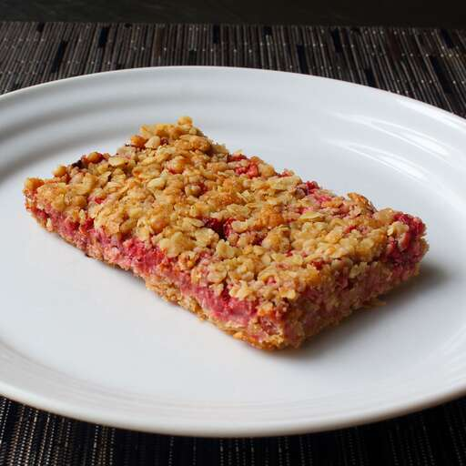

I'm always on the lookout for easy and delicious things to make for breakfast that are on the one hand, relatively healthy and good for you, while on the other hand, not too good for you. I think these really do fit the bill. These are normally made with preserves, but here we're using fresh strawberries for a little lighter and lower-sugar approach. For best results, refrigerate before serving.
Preheat the oven to 375 degrees F(190 degrees C). Butter a 9x12-inch baking dish.
Remove the green tops from strawberries using the tip of a small, sharp knife or strawberry huller. Place the berries cut-side down on a work surface and cut in half. Slice each half lenghtwise 3 to 5 times before turning and cutting across in a nice, uniform dice.
Combine diced strawberries, lemon juice, sugar, and constarch in a mixing bowl and stir until thoroughly combined and cornstarch disappers. Set aside until needed.
Combine oats, all-purpose flour, whole wheat, brown sugar, salt, and ginger in a mixing bowl. Pour in melted butter and stir thoroughly until dry ingredients are evenly coated.
Transfer 60% of the oatmeal mixture into the prepared baking dish and spread out into an even layer.Press the mixture down with the back of a spoon or spatula to compres slightly.
Place the strawberries over the top using a slotted spoon. Do not press down. Reserve any accumulated juices in the bowl. Top with remaining oatmeal mixture and press down ligytly with the back of a spoon or spatula. Drizzle reserved juices on top.
Bake in the preheated oven until the top is golden brown, about 45 minutes. Press the top down with a sptula to compress slightly. Let cool completely, about 1 hour. Cut into bars and serve.